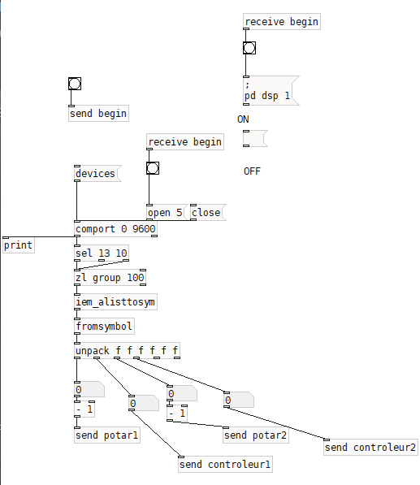
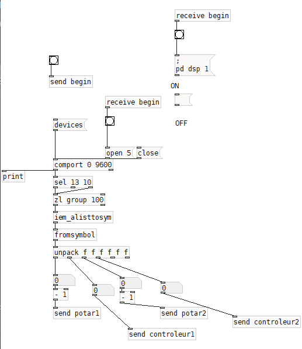

outils:
arduino |
puredata |
definition:
EXO-INSTRUMENT
FR:
EXO-INSTRUMENT est un instrument
qui dépasse le corps de son utilisateur,
à l’instar de l’échelle monumentale l'orgue.
Par la manipulation de systèmes de poulies des sonorités sont générées
créant un dialogue et une tension
entre le musicien et cette structure.
ENG:
EXO-INSTRUMENT is an instrument
that extends beyond the body
of its user,
like the monumental organ scale.
By manipulating pulley systems,
sounds are generated,
creating a dialogue and tension
between the musician
and this structure.

 
